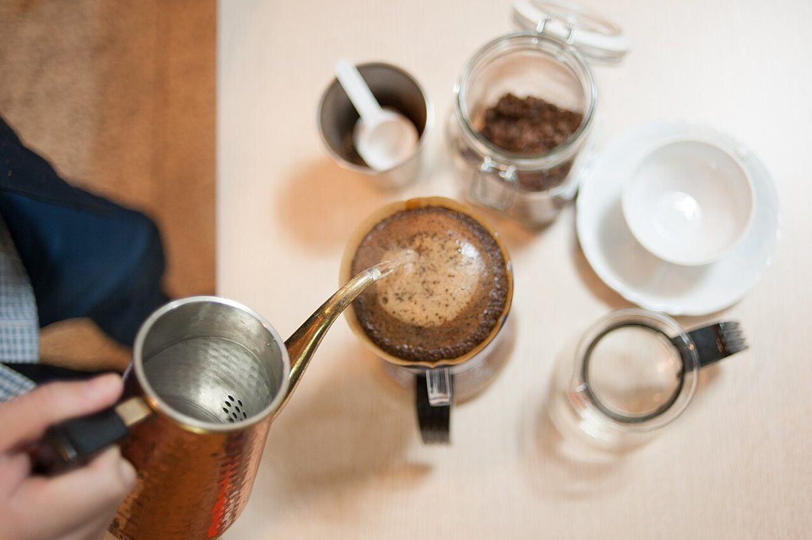
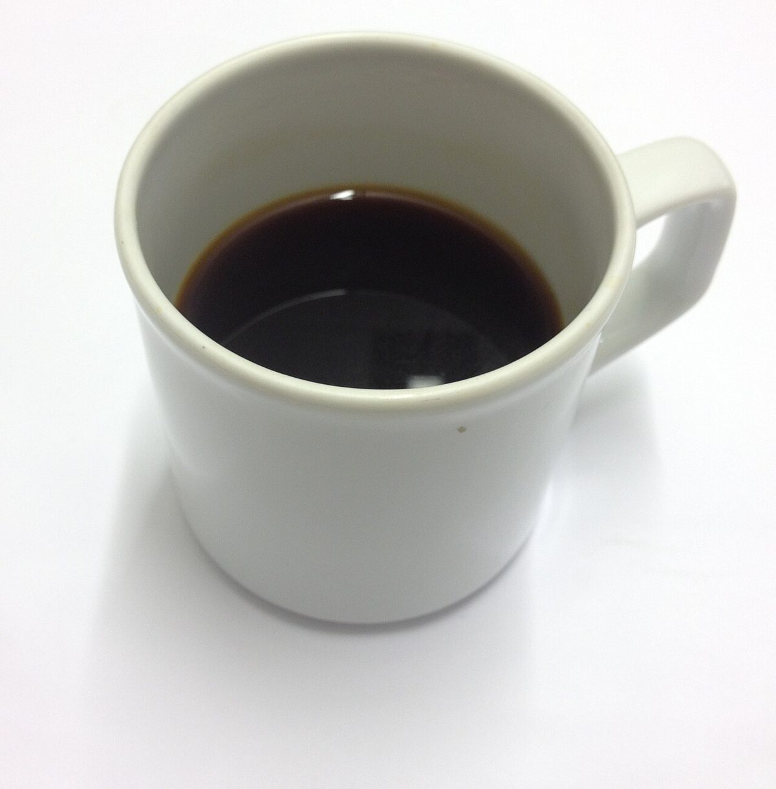
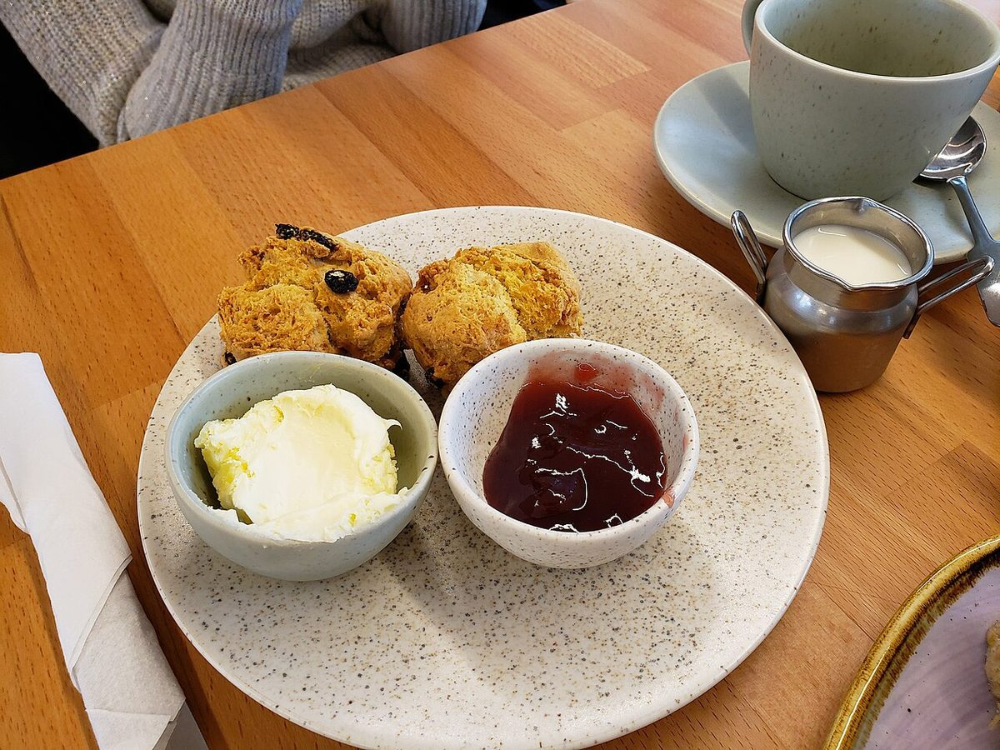
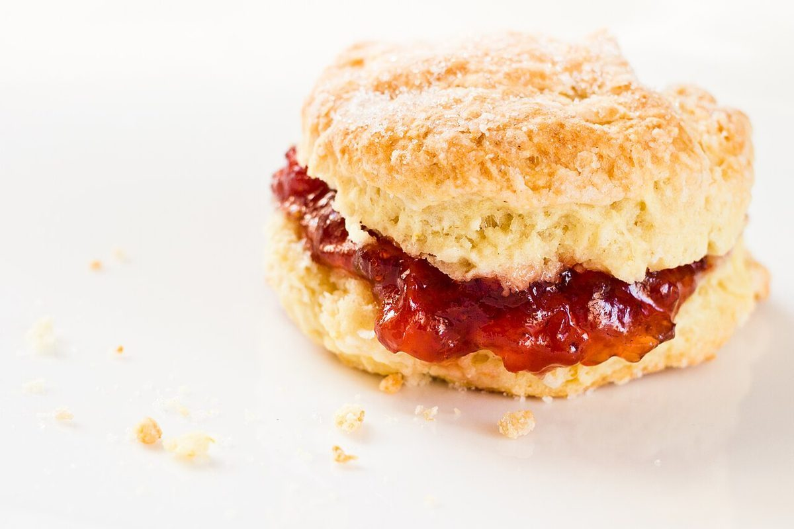

メニュー
メニューの内容と料金は準備中です。詳しくはお電話またはInstagramでお問い合わせください。

イメージ写真
以下はカフェの雰囲気をお伝えするためのフリー素材の写真です。






写真は店舗の提供品ではなく、フリー素材のイメージです。実際のメニューとは異なります。
メニューの内容と料金は準備中です。詳しくはお電話またはInstagramでお問い合わせください。

以下はカフェの雰囲気をお伝えするためのフリー素材の写真です。



写真は店舗の提供品ではなく、フリー素材のイメージです。実際のメニューとは異なります。